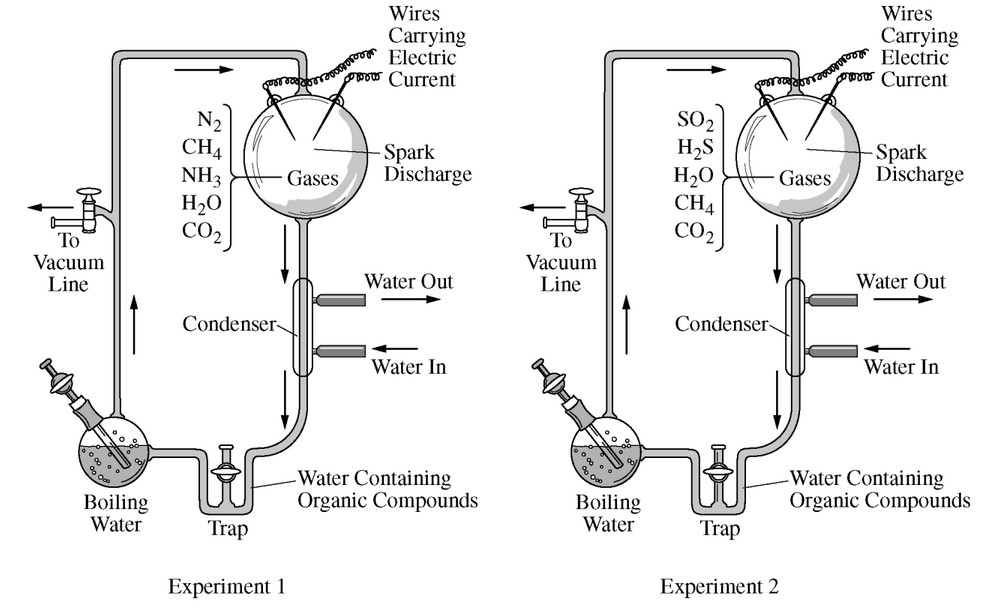

Two groups of students attempted to re-create the primitive atmospheric conditions of early Earth using the apparatus represented below. Each group ran the experiment with different gas mixtures in the apparatus.

Which of the following statements best justifies the claim that the conditions in at least one of the experiments could generate the molecular building blocks essential for life?